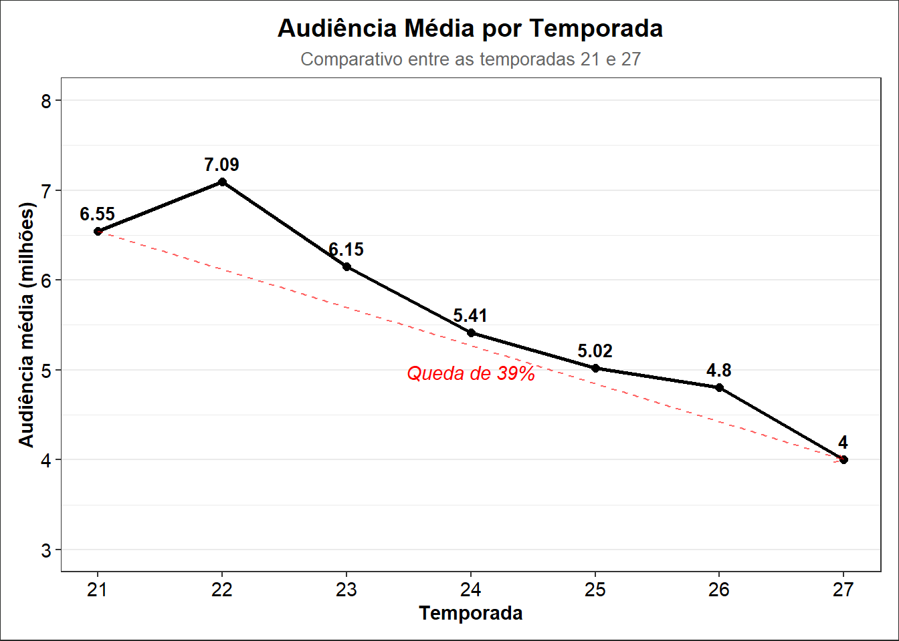
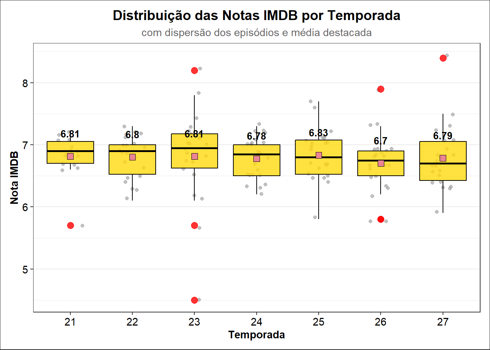
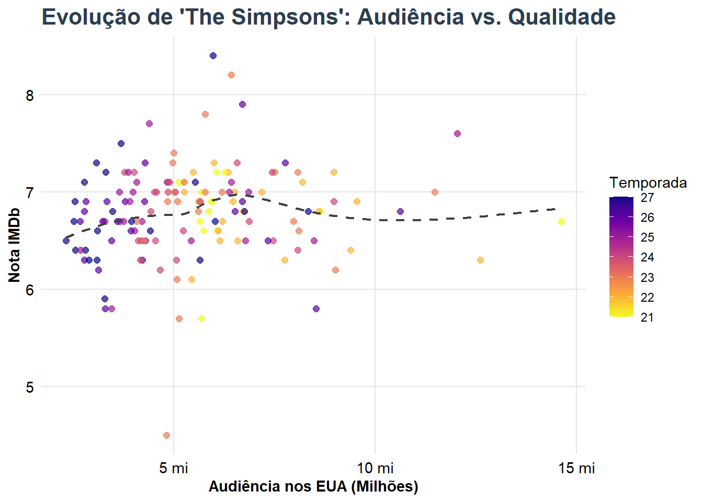
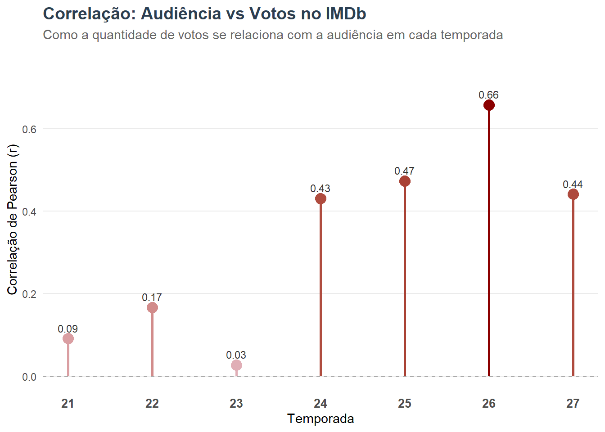
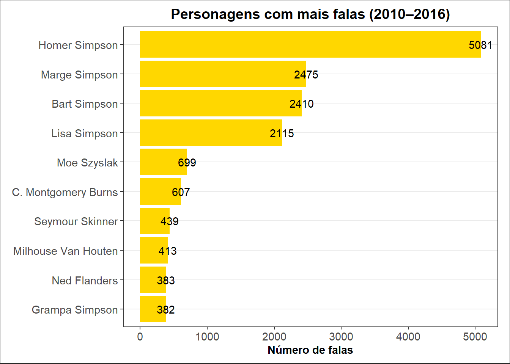
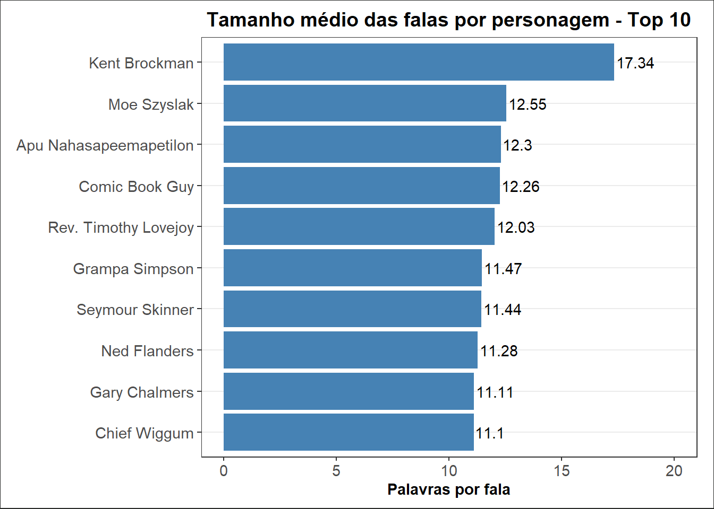
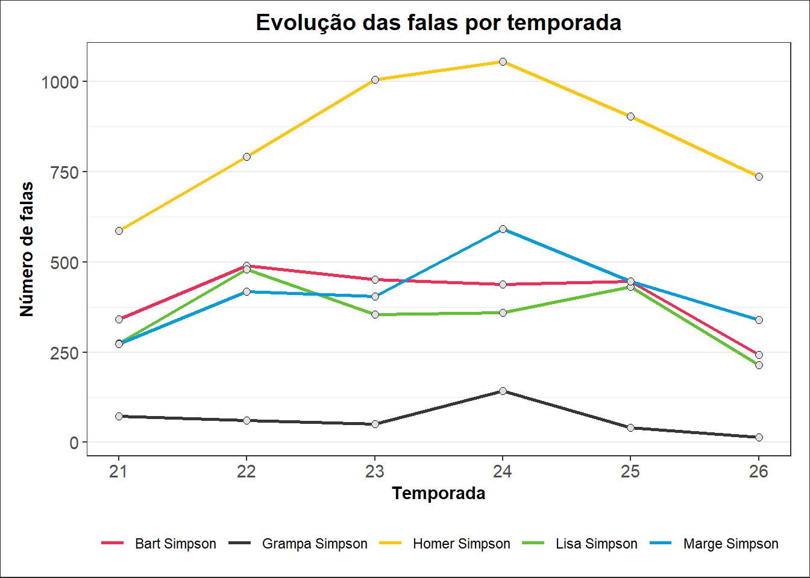
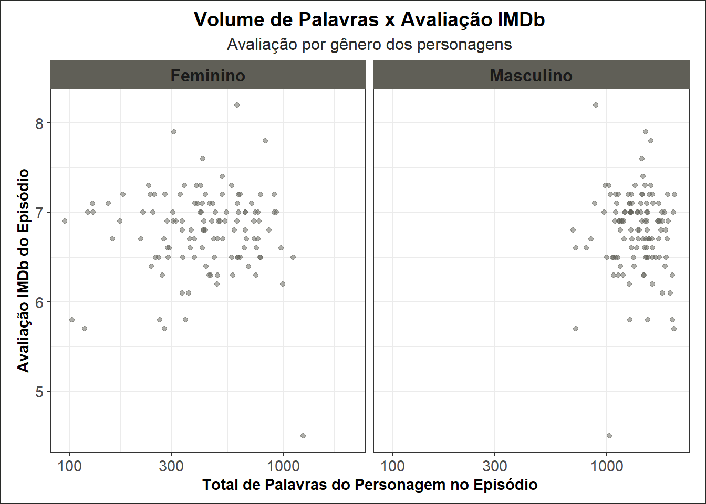
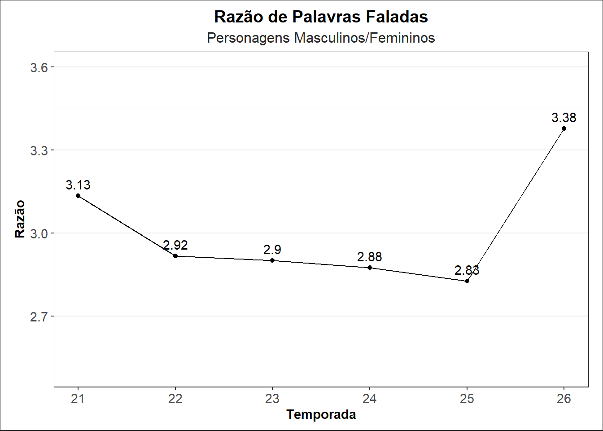

# A tibble: 6 × 26
id episode_id number raw_text speaking_line character_id location_id
<dbl> <dbl> <dbl> <chr> <lgl> <dbl> <dbl>
1 132917 473 128 Fbi Superviso… TRUE 5734 6
2 127110 452 61 Homer Simpson… TRUE 2 2
3 126516 450 1 Homer Simpson… TRUE 2 3656
4 126517 450 2 Homer Simpson… TRUE 2 3656
5 126520 450 5 Marge Simpson… TRUE 1 3656
6 126550 450 35 Grampa Simpso… TRUE 31 354
# ℹ 19 more variables: raw_character_text <chr>, raw_location_text <chr>,
# spoken_words <chr>, normalized_text <chr>, word_count <dbl>,
# imdb_rating <dbl>, imdb_votes <dbl>, number_in_season <dbl>,
# number_in_series <dbl>, original_air_date <date>, original_air_year <dbl>,
# production_code <chr>, season <dbl>, title <chr>,
# us_viewers_in_millions <dbl>, views <dbl>, name <chr>,
# normalized_name <chr>, gender <chr>—title: “Os Simpsons em Números” format: html editor: visual lang: pt toc: true fig-align: center fig-auto-id: true tbl-auto-id: true tbl-cap-location: bottom bibliography: referencia.bibcs l: estilo_abnt.csl css: style.css crossref: fig-prefix: “Gráfico” fig-title: “Gráfico” —
1. Introdução
Os Simpsons é a série animada há mais tempo no ar na TV dos Estados Unidos. Sua estreia aconteceu no ano de 1989 e permanece no ar até hoje. [@BritannicaSimpsons]
Em mais de 30 anos de exibição, a série já se envolveu em inúmeras polêmicas, inclusive com o público brasileiro, graças a um episódio da 13ª temporada, que mostrava o Brasil como um lugar violento, onde as ruas eram infestadas de macacos e as pessoas se movimentavam dançando conga. [@CanaltechSimpsonsBrasil] Ao longo dos anos, a audiência do show diminuiu consideravelmente, mas a família Simpson ainda se mantém relevante, com episódios assistidos por milhões de pessoas, não apenas nos Estados Unidos, mas em todo o mundo. [@SchneiderSimpsons]
Neste trabalho, será apresentada uma análise dos episódios das temporadas 21 a 27, exibidos entre os anos de 2010 a 2016, considerando dados de audiência, avaliação do público e caracaterísticas dos diálogos entre os personagens. Pretende-se avaliar as tendências de variação da audiência e da avaliação popular dos episódios ao longo do tempo, e também a existência de correlações entre essas duas variáveis. Serão verificadas, também, tendências de variação no volume de palavras faladas pelos personagens, possíveis correlações entre este volume e a avaliação popular, além de diferenças relacionadas ao gênero dos personagens.
A análise das avaliações do público será feita com base nas notas dadas aos episódios pelos usuários do IMDb, um popular site de informações sobre produções audiovisuais, em que os usuários podem dar notas de 1 a 10 aos programas.
2. Materiais e Métodos
2.1. Conjunto de Dados
O conjunto de dados foi obtido a partir do repositório GitHub do projeto Tidy Tuesday, que disponibiliza, semanalmente, conjuntos de dados para desafios e prática da comunidade de ciência de dados. Para a obtenção dos dados, utilizou-se o pacote tidytuesdayR através do RStudio. O código R para obtenção dos dados é mostrado a seguir:
install.packages("tidytuesdayR")
tuesdata <- tidytuesdayR::tt_load('2025-02-04')
simpsons_characters <- tuesdata$simpsons_characters
simpsons_episodes <- tuesdata$simpsons_episodes
simpsons_locations <- tuesdata$simpsons_locations
simpsons_script_lines <- tuesdata$simpsons_script_lines
O conjunto é composto por 4 arquivos de valores separados por vírgulas:
| Arquivo | Tamanho | Descrição |
|---|---|---|
| simpsons_characters.csv | 222 kb | Informações dos personagens: nome e gênero |
| simpsons_episodes.csv | 30 kb | Informações sobre os episódios: título, ano de exibição, temporada, audiência nos EUA, avaliação do público; |
| simpsons_locations.csv | 174 kb | Nomes dos locais exibidos nos episódios |
| simpsons_script_lines.csv | 6.88 Mb | Linhas de falas dos personagens por episódio |
As estruturas completas das tabelas de dados são mostradas a seguir:
| Nome da Coluna | Tipo | Amostra |
|---|---|---|
| id | numeric | 7, 12, 13 |
| name | character | Children, Mechanical Santa, Tattoo Man |
| normalized_name | character | children, mechanical santa, tattoo man |
| gender | character | NA, NA, NA |
| Nome da Coluna | Tipo | Amostra |
|---|---|---|
| id | numeric | 450, 452, 455 |
| image_url | character | http://static-media.fxx.com/img/FX_Networks_-_FXX/180/63/Thursdays_with_Abie.jpg, http://static-media.fxx.com/img/FX_Networks_-_FXX/603/859/Simpsons_21_11.jpg, http://static-media.fxx.com/img/FX_Networks_-_FXX/200/83/Postcards_from_the_Wedge.jpg |
| imdb_rating | numeric | 6.8, 7.1, 7.1 |
| imdb_votes | numeric | 481, 532, 480 |
| number_in_season | numeric | 9, 11, 14 |
| number_in_series | numeric | 450, 452, 455 |
| original_air_date | Date | 2010-01-03, 2010-01-31, 2010-03-14 |
| original_air_year | numeric | 2010, 2010, 2010 |
| production_code | character | MABF02, MABF03, MABF04 |
| season | numeric | 21, 21, 21 |
| title | character | Thursdays with Abie, Million Dollar Maybe, Postcards from the Wedge |
| us_viewers_in_millions | numeric | 8.65, 5.11, 5.23 |
| video_url | character | http://www.simpsonsworld.com/video/250369603964, http://www.simpsonsworld.com/video/279804995696, http://www.simpsonsworld.com/video/250390595937 |
| views | numeric | 36227, 40854, 41357 |
| Nome da Coluna | Tipo | Amostra |
|---|---|---|
| id | numeric | 1, 2, 3 |
| name | character | Street, Car, Springfield Elementary School |
| normalized_name | character | street, car, springfield elementary school |
| Nome da Coluna | Tipo | Amostra |
|---|---|---|
| id | numeric | 132733, 132917, 134285 |
| episode_id | numeric | 472, 473, 478 |
| number | numeric | 222, 128, 198 |
| raw_text | character | Lisa Simpson: (CHORTLE), Fbi Supervisor: No., Willis: Oh my. |
| timestamp_in_ms | numeric | 1073000, 607000, 1150000 |
| speaking_line | logical | FALSE, TRUE, TRUE |
| character_id | numeric | 9, 5734, 5816 |
| location_id | numeric | 5, 6, 2117 |
| raw_character_text | character | Lisa Simpson, Fbi Supervisor, Willis |
| raw_location_text | character | Simpson Home, KITCHEN, COTTAGE |
| spoken_words | character | NA, No., Oh my. |
| normalized_text | character | NA, no, oh my |
| word_count | numeric | NA, 1, 2 |
2.2. Preparação dos Dados
Inicialmente, para viabilizar as análises de audiência dos episódios, a tabela simpsons_episodes foi filtrada para remoção de observações NA das variáveis de audiência e avaliação IMDb, identificadas como us_viewers_in_millions e imdb_rating. Também foram excluídas as colunas image_url e video_url, que não teriam aplicabilidade para as análises desejadas. Por fim, foram limpos os dados da temporada 28 que estavam incompletos no conjunto de dados. O preparo da tabela foi realizado utilizando o código a seguir:
episodes_clean <- simpsons_episodes %>%
filter(!is.na(us_viewers_in_millions),
!is.na(imdb_rating),season != 28 ) %>%
select(-c(image_url,video_url))Para trabalhar com os diálogos dos personagens, foram unidas as tabelas de episódios, simpsons_episodes e de diálogos, simpsons_script_lines:
# script <- simpsons_script_lines %>%
# left_join(simpsons_episodes %>% select(id, season),
# by = c("episode_id" = "id"))
script <- simpsons_script_lines %>%
filter(!is.na(raw_character_text)) %>%
inner_join(simpsons_episodes %>% select(id, season),
by = c("episode_id" = "id"))E finalmente, eliminaram-se as linhas da tabela que não correspondiam a diálogos, onde a coluna spoken_wordsencontrava-se vazia ou com valor NA e as linhas cuja varável raw_character_text continham NA’s, uma vez que esses valores não traziam benefícios nenhum a análise.
frases_com_personagem <- script %>%
left_join(simpsons_characters, by = c("character_id" = "id")) %>%
filter(!is.na(spoken_words), spoken_words != "") %>%
count(name, spoken_words, sort = TRUE)Estes são os passos básicos de tratamento, utilizados para limpar e preparar todo o conjunto de dados para análise. Gráficos e tabelas construídas podem utilizar passos adicionais específicos para selecionar, filtrar e resumir os dados de forma apropriada à visualização desejada.
3. Resultados e Discussão
3.1. Audiência e Avaliações IMDb
A primeira análise realizada considerou a audiência dos episódios medida nos Estados Unidos. Os dados foram agrupados por temporada e a audiência média é exibida a seguir:
Warning: Using `size` aesthetic for lines was deprecated in ggplot2 3.4.0.
ℹ Please use `linewidth` instead.
O gráfico mostra uma queda acentuada na média de espectadores por temporada desde a temporada 22, chegando a uma redução de cerca de 40%.
A seguir, são exibidos os resultados obtidos para a análise das notas no IMDb.



A análise das notas dadas aos episódios por temporada, mostrada no Gráfico 2 acima mostrou haver pouca variação média das notas ao longo do tempo. Considerando este dado em conjunto com a queda de audiência vista anteriormente, analisou-se a existência de correlação entre as variáveis de audiência e notas, e entre as variaveis audiência e quantidade de votos, tanto visualmente quanto através do coeficiente de correlação de Pearson.
Em relação a correlação entre audiência e notas, o coeficiente de correlação de Pearson calculado foi de r = 0,112, indicando uma correlação positiva, porém fraca. Essa tendência é confirmada pelo modelo de regressão linear simples (β = 0,0247; p = 0,175), cujo coeficiente inclinado não apresenta significância estatística. Além disso, o modelo explica menos de 1,3% da variabilidade das notas (R² = 0,0125), reforçando que a audiência não é um preditor relevante da avaliação crítica dos episódios. Por fim, o gráfico Gráfico 3 mostra de forma visual que não parece haver correlação significativa entre as variáveis. O que é confirmado pelos coeficientes de Pearson calculados para cada temporada, vistos no Gráfico 4.
correlation <- cor(episodes_clean$us_viewers_in_millions,
episodes_clean$imdb_rating,
method = "pearson")
corr_by_season_rating <- episodes_clean %>%
group_by(season) %>%
summarise(
n = n(),
corr = cor(us_viewers_in_millions, imdb_rating, use = "complete.obs", method = "pearson")
)
model <- lm(imdb_rating ~ us_viewers_in_millions, data = episodes_clean)
summary(model)Já em relação a correlação entre audiência e notas, a correlação de Pearson calculada no conjunto completo dos dados indica uma relação positiva e de magnitude moderada (r = 0,45 no conjunto geral; variando de 0,09 a 0,66 por temporada). Apesar da variabilidade sazonal, observa-se que, a partir da 24ª temporada, os coeficientes tornam-se consistentemente mais elevados (0,43–0,66), sugerindo que essa associação se fortalece nas temporadas mais recentes. Essa tendência é corroborada pelo modelo de regressão linear simples, que apresenta um coeficiente angular positivo e estatisticamente significativo (β = 28,92, p < 0,001). Esse resultado indica que episódios com maior audiência tendem a receber um número maior de votos na plataforma, e esse padrão não ocorre ao acaso. O modelo apresenta ainda um R² de 0,20, revelando que aproximadamente 20% da variação no número de votos pode ser explicada apenas pela audiência.
corr_by_season_votes <- episodes_clean %>%
group_by(season) %>%
summarise(
n = n(),
corr = cor(us_viewers_in_millions, imdb_votes, use = "complete.obs", method = "pearson")
)
model_votes <- lm(imdb_votes ~ us_viewers_in_millions, data = episodes_clean)
summary(model_votes)3.2. Diálogos dos Personagens
A análise dos diálogos fixou-se, principalmente, na quantidade de palavras ou frases faladas pelos personagens. Inicialmente, uma análise do número de falas dos personagens resultou no gráfico seguinte.

O número total de falas entre 2010 e 2016 coloca Homer Simpson como o personagem mais falante, seguido dos outros membros da família, com uma larga diferença para os demais personagens.
Em seguida, procurou-se avaliar não apenas a quantidade, mas também o conteúdo das falas. Os resultados obtidos são os que seguem.

| Personagem | Frase | Repetições |
|---|---|---|
| Homer Simpson | woo hoo! | 23 |
| Bart Simpson | ay carumba! | 16 |
| Homer Simpson | what the? | 15 |
| Marge Simpson | homer! | 14 |
| Homer Simpson | why you little... | 11 |
| Bart Simpson | no. | 9 |
| Bart Simpson | ay carumba. | 6 |
| Bart Simpson | yeah. | 6 |
| C. Montgomery Burns | excellent. | 6 |
| Female Singers | skinner! | 6 |
| Gary Chalmers | skin-ner! | 6 |
| Lisa Simpson | are we there yet? are we there yet? | 6 |
| Nelson Muntz | haw haw! | 6 |
Através do Gráfico 6, nota-se que, embora os personagens principais da família tenham um volume de falas bastante superior aos demais, nenhum deles aparece entre aqueles com as falas mais longas. Um indicativo da explicação para isso pode ser visto na Tabela 5, que mostra as expressões mais faladas pelos personagens, e onde é possível ver que algumas das frases mais repetidas pela família Simpson são interjeições e exclamações curtas.
Na sequência das análises, avaliou-se a variação entre as temporadas do volume de falas dos personagens, focando apenas nos membros da família. A partir desta análise, decidiu-se investigar uma possível influência dos volumes de falas sobre as notas do IMDb vistas anteriormente. Os resultados são mostrados nos gráficos a seguir.



No Gráfico 7 acima, observa-se que, além de ter o maior volume de falas, como já é conhecido, Homer Simpson apresentou, ainda, uma forte tendência de elevação deste volume entre as temporadas 21 a 24. A mesma tendência pode ser observada para a mãe da família, Marge. Com isso, ela assume, nas últimas temporadas, a segunda posição entre os personagens mais falantes.
Baseado nesta informação, avaliou-se a influência do volume de falas sobre as notas dadas no IMDb, levando em conta a divisão dos personagens por gênero. Conforme se observa no Gráfico 8, não há indícios da correlação entre as variáveis. No mesmo gráfico, porém, é possível perceber que o volume de palavras dos personagens masculinos é bastante superior ao feminino, o que é confirmado como uma característica constante ao longo das temporadas através do Gráfico 9, que mostra uma proporção cerca de 3 vezes maior de falas para oos personagens masculinos.
4. Conclusão
Os Simpsons podem não ser mais o fenômeno que foram um dia na TV mundial, mas segue sendo um programa de grande relevância. O Gráfico 1 mostra isso, deixando clara a forte queda da audiência dos episódios, ao mesmo tempo em que mostra que ainda há uma audiência média de mais de 3 milhões de espectadores por episódio, apenas nos EUA.
A queda na popularidade, porém, parece não afetar a admiração daqueles que permanecem fieis ao show. Isto pode ser observado no Gráfico 2, que mostra a variação das avaliações dos episódios no site IMDb, e no Gráfico 4, onde é mostrada a evolução do coeficiente de correlação de Pearson entre as variáveis número de espectadores e avaliação dos episódios. O primeiro gráfico traz boxplots, mostrando pouca variação das notas dadas a Os Simpsons ao longo das temporadas. No segundo gráfico, embora seja possível perceber um aumento relativo da correlação entre a audiência e as notas dos episódios ao longo do tempo, apenas em uma das temporadas o coeficiente de Pearson esteve acima de 0,5, o que de fato caracteriza não haver correlação entre as variáveis.
A análise dos diálogos dos personagens revela curiosidades interessantes. Os personagens de maior destaque, como seria esperado, são os membros da família, com amplo destaque para Homer Simpson. O patriarca teve, nos anos de 2010 a 2016, mais que o dobro de falas dos seus familiares, conforme visto no Gráfico 5. Com relação aos outros membros da família, o Gráfico 7 exibe uma aparente tendência de aumento da participação da mãe, Marge Simpson, nos diálogos. Nota-se que, a partir da temporada 24, ela passa a ser a personagem com mais falas depois de Homer.
A grande disparidade no volume de falas de Homer motivou a análise de uma possível influência do gênero dos personagens sobre as avaliações no IMDb. O Gráfico 8, porém, não demontrou indícios dessa relação. Entretanto, outra informação extraída deste mesmo gráfico é que o volume de falas dos personagens do gênero masculino é bastante superior às do gênero feminino. Em praticamente todos os episódios, os homens ultrapassam 1000 palavras faladas, enquanto as mulheres raramente se aproximam desta marca. Esta diferença pode ser quantificada pelo Gráfico 9, que mostra que a razão do volume de falas entre os gêneros ao longo das temporadas é de aproximadamente 3. Ou seja, os personagens masculinos têm cerca de 3 vezes mais participação nos episódios. Assim, conclui-se que Os Simpsons ainda é um importante sucesso de audiência, porém deixa a desejar em relação à representatividade dos personagens.
Por fim, em relação às limitações deste estudo, embora a base utilizada seja relativamente completa, ainda existem dados ausentes e incompletos, o que pode reduzir ligeiramente a precisão das estimativas. Além disso, a ausência de variáveis contextuais como horário de exibição, concorrência televisiva, estratégias de marketing ou presença de convidados especiais limita a capacidade de compreender plenamente os fatores que influenciam audiência, notas e engajamento. Outro ponto importante é o viés de auto-seleção inerente às avaliações do IMDb: muitas vezes, usuários motivados escolhem atribuir notas e votos, o que pode não refletir a opinião do público geral. Ademais, mudanças no padrão de consumo de mídia ao longo das décadas, com a transição da TV aberta para o streaming, tornam menos comparáveis os episódios de diferentes períodos, introduzindo variações não controladas na análise.
5. Referências Bibliográficas
https://ggplot2.tidyverse.org/reference/geom_boxplot.html
WICKHAM, Hadley; GROLEMUND, Garrett. R for Data Science: Import, Tidy, Transform, Visualize, and Model Data. 1. ed. Sebastopol: O’Reilly Media, 2017.
https://simpsons.fandom.com/pt-br/wiki/Wiki_Simpsons